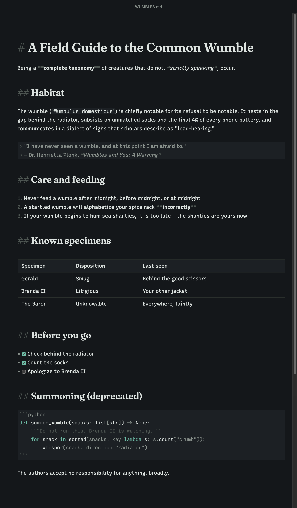

Foolscap
A markdown editor for macOS. Free, open source, file-first,
and unreasonably well-typeset.

The one promise
Your document is plain markdown text at all times. No hidden document model, no conversion, no round-trip. What’s in the buffer is byte-for-byte what’s in the file — the pretty rendering is a costume laid over the text, and the text itself is never touched. Every other tool on earth can read what Foolscap writes.
What it does
Marks that recede
Syntax fades to a ghost when you leave a line and breathes back up when your cursor returns. Nothing jumps, nothing flickers.
One pipeline
The editor, the preview (⌘E), HTML export, and typeset PDF export all render through the same engine. What you see is what you ship.
Tables you can touch
A pipe table renders as a real grid and edits in place — click a cell and type. Underneath, the file stays tidy, aligned pipes.
Never lose a word
Autosave writes while you pause, every save lands in a browsable version history, and ⌘Q walks away silently — every window, drafts included, returns on the next launch, right where you left it.
Seven themes, ten faces
From the house Ledger and Plate to GitHub and VS Code, plus load-your-own CSS. One font carries the page; code keeps its mono.
Nothing else
No vaults, sync, accounts, telemetry, plugins, or AI. There are forty apps that do those things. This one is about writing.